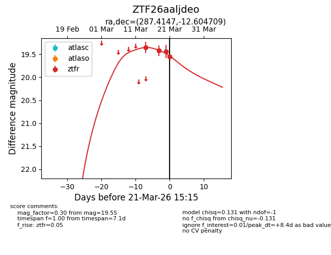
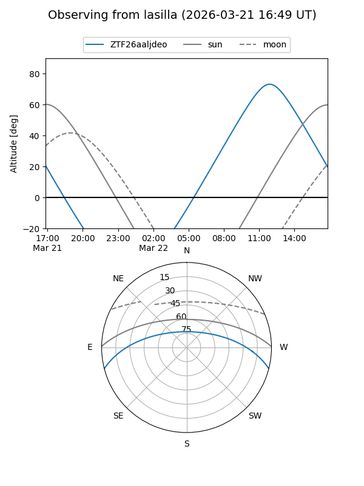
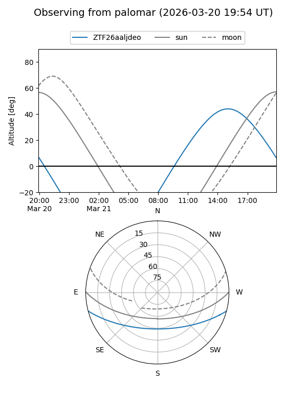
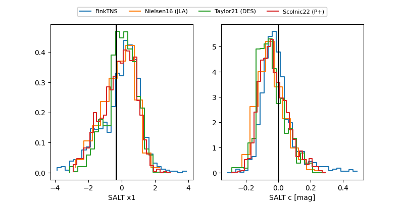

ZTF26aaljdeo
Target ZTF26aaljdeo at 2026-03-21 15:17
Aliases and brokers:
FINK: link
Lasair: link
ALeRCE: link
alt names
ZTF26aaljdeo (ztf,fink_ztf)
Coordinates:
equatorial (ra, dec) = 287.4147,-12.60471
equatorial (HMS+DMS) = 19:09:39.52,-12:36:16.95
galactic (l, b) = (23.6566,-9.69977)
Flags:
Photometry:
last ztfr=19.55
4 ztfr detections
Lightcurve

Visibility


Additional plots
